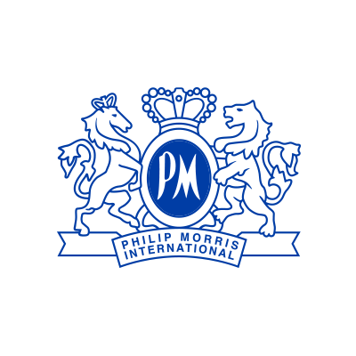

HsinChun Chan (James)
Business Development, Market Entry & Product Operations
Combining training in Social Work and Economics with hands-on experience in business development, market research, new-market entry, and process optimization.
I am an NTU student majoring in Social Work with a minor in Economics, with internship experience across multinational companies, startups, and international education.
Through roles at PMI, Everytime, and CET Academic Programs, I have worked on business development optimization, Taiwan market entry, customer and competitor research, and service improvement. My experience ranges from building data-driven lead generation processes and conducting field market validation to analyzing student communities and translating user insights into practical recommendations.
I am particularly interested in solving business problems that require structured analysis, market understanding, and cross-functional execution, while using technology and data as practical tools to improve decision-making.

Commercial Intern
Jun. 2026 – Aug. 2026Taipei, Taiwan
Redesigned manual prospecting through a two-month business development optimization initiative, combining digital screening with field market validation.
Market Entry & Product Operations Intern
Jun. 2026 – PresentRemote, Korea
Supported a Korean startup’s expansion into Taiwan through university-market research, competitor monitoring, product localization, and course-data collection.

Marketing and Content Intern
Aug 2025 – Dec 2025Analyzed student needs and expectation gaps to recommend service improvements, while coordinating international students, local partners, and internal teams.

Project Assistant
Feb 2026 – PresentSupport academic events and research-related operations involving domestic and international scholars, coordinating administrative processes and cross-functional communication.
Audience Insight & Program Optimization
Aug 2025 – Dec 2025 | CET Academic ProgramsAnalyzed end-of-term user evaluation data (N=68) to identify student pain points and provide data-backed operational recommendations for program improvement.
Breakfast Club — User Needs Analysis & Product Design
School Project | Course: Project Design & EvaluationResearched breakfast habits among 62 students, identified behavioral barriers, and translated findings into product requirements for a digital habit-support service.

Vice President
2025 – PresentTranslated student concerns into feasible campus-service proposals, coordinating university offices and student representatives.

Vice President, PR & Sponsorship
2024 – 2025Rebranded and relaunched Nerds War, coordinating university teams, sponsors, promotion, and event operations; used surveys and past participation data to support planning.
- Business & Research Business Development, Market Research, Competitive Analysis, Customer Insight, Process Improvement, Product Operations
- Analysis & Digital Tools Excel, SQL, Power BI, Power Platform, n8n, Web Scraping, Google Analytics
- Product & Operations Product Localization, Workflow Design, Data Management, Cross-functional Coordination, Requirement Gathering
- Communication Stakeholder Engagement, Bilingual Communication, Presentation, Insight Synthesis
- Languages Mandarin Chinese — Native; English — Fluent
Contact
I am interested in opportunities across business strategy, market entry, business development, and product operations, where I can combine structured analysis, market understanding, and practical execution.